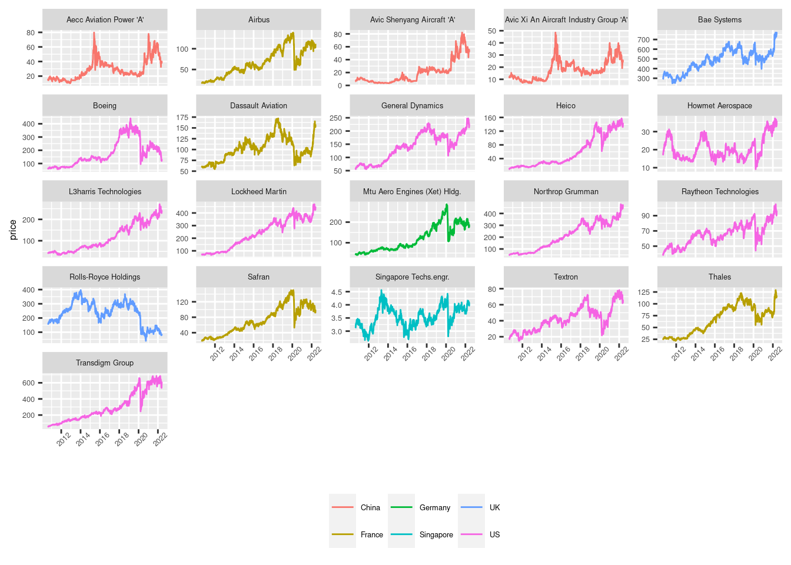
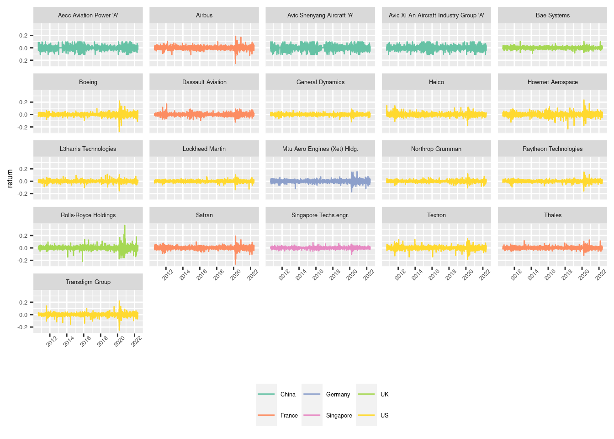

Investigating Extreme Linkage Topology in the Aerospace and Defence Industry
Abstract
This paper analyses a system of return and volatility spillovers among 21 global defense and aerospace (A&D) companies covering six countries, namely the United States (US), United Kingdom (UK), France, Germany, China and Singapore, across three continents from August, 2010 to July 1, 2022 using quantile-based models. The results show that both return and volatility spillover measures are not stable over time, and those estimated at normal market conditions (at the middle quantile), intensify during crisis periods such as the COVID-19 outbreak. There is also evidence of intensified spillover effects for return shocks at both lower and upper quantiles, which exceed the return spillover estimated at the middle quantile, thus indicating significantly different behavior across different market conditions. The level of spillovers at the lower quantile in the return system is considerably larger than that in the volatility system, but the level of volatility spillover is extremely high at the upper quantile only and exhibits low variability. There is also evidence of differences between the companies analysed. For example, Chinese defense stocks seem segmented from the rest of defense stocks under normal return conditions and moderate volatility state, but they somewhat integrated with global defense stocks under extreme return condition and volatility state. This suggests that they are not valuable investments for portfolio diversification under substantial bear or bull markets when returns and volatility are extremely low or high. Further analysis of the drivers of returns and volatility spillovers reveals that geopolitical risk consistently plays a significant role, especially during the pandemic and war period, without ignoring the importance of macro-economic and financial variables. These results have implications for investors concerned with the management of their stock portfolio under various market conditions and policymakers seeking to design policies under normal and volatile market mechanisms.
keywords: Aerospace and defence companies; Ukrainian war; Russia; quantile vector-autoregression; COVID-19.
Introduction
On 24 February 2022, Russia attacked Ukraine, initiating a war that has led to wide scale devastation, especially in Europe, the consequences of which will be felt far into the future. While the humanitarian effects are almost incomprehensible, this destructive event has also substantially affected financial markets, the global economy, energy and grain prices, and the fortunes of defense companies. There unfortunately appears to be no end in sight for the war and increases in spending on defense continued to increase globally. In 2022 global military expenditure surpassed $US 2 trillion for the first time (World military expenditure passes $2 trillion for first time according to SIPRI). During the same year, the United States (US) spent the most on military spending ($US 750 billion), followed by China ($US 237 billion), Saudi Arabia ($US 67.6 billion), India ($US 61 billion) and the United Kingdom (UK) ($US 55.1 billion).1
This defence spending has seen the global aerospace and defence (A&D) industry outperform in public markets. According to Refinitiv Eikon, year to January 2023, the total return of the A&D industry equated to 13.89%, compared to -3.45% for the global equity markets. This is despite their average total market capitalisation being 1% of the global equity markets. Total revenues of the last twelve months were $US 665 billion, with the top 20 largest companies by revenue capturing 75% of this total revenue (See Appendix for detailed Market Analysis). Merger and acquisition activity in the A&D industry was also high with 361 deals with a total value including Net Debt of US 36 billion2. Given their outsize recent market performance, our study investigates the network topology of the risk and return characteristics of the A&D industry using a representative subset of the 351 publicly listed securities (See . We explicitly consider the transmission pathway from one to another under various market conditions.
Surprisingly, the related literature is limited in this regard. Studies on the A&D industry date back at least as far as the 1960s, mainly focusing on the investment quality of companies in this sector (Butler 1966b, 1966a, 1967) and their profits and market performance (Agapos and Gallaway 1970; Suarez 1976; Bohi 1973). McDonald and Kendall (2011) analyse the effects of war on the U.S. defense industry, focusing on 16 firms that provided military equipment to the Department of defense. Applying a cumulative prediction error (CPE) technique, they find that the stock prices of defense firms tend to increase because of military actions. Capelle‐Blancard and Couderc (2008) analyse the effect of media information, on defense companies only, finding that news relating to earnings announcements and analyst recommendations are significant in terms of explaining abnormal returns for these companies. More recently, Federle and Sehn (2022) analyse stock market responses to the war in Ukraine, finding that firms located closer to Ukraine suffered from a relative proximity penalty; experiencing a negative equity returns during the four weeks surrounding the beginning of the war. (le2022Le?) use war-related news articles to investigate the market response of some companies to the war in Ukraine, finding a negative impact on airlines and a positive impact on the defence market. Zhang et al. (2022) utilizes a geopolitical risk index to analyse co-movements between geopolitical risk and returns of global defense and aerospace companies, finding significant co-movements around the onset of the war in Ukraine. This is labelled a ‘flight-to-arms’ phenomenon, with co-movement found to be significant for more European and US companies in the sample. Kumar et al. (2022) highlight the strong performance of many US and European A&D stocks during the Russia-Ukraine war and point to the strong impact of geopolitical risk on the returns and volatility of global A&D companies.
This paper contributes to this body of academic literature by analyzing the network of returns and volatility spillovers across major A&D companies, using a quantile-based connectedness. The flexibility of this approach provide analysis on various market return conditions and volatility states. Our sample of 21 A&D companies incorporates eight out of the ten largest in the world by revenue and covers six countries namely US, UK, France, Germany, China and Singapore, across three continents (North America, Europe, and Asia) from August 2010 to July 2022. The period under study covers events such as the Russian invasion of Crimea in 2014, the COVID-19 pandemic of 2020, and the invasion of Ukraine in 2022, thus enabling the identification of significant spillovers across a varying set of global geopolitical events. The main results show evidence of intensified spillover effects for both stock returns and volatility under extreme market conditions and time evolution, especially under turbulent periods. Furthermore, we examine the impact of heightened geopolitical around the Russian-Ukraine war period, on the return and volatility spillovers across A&D companies, and show their significant role in driving up the level of spillovers in most of the quantiles considered.
The paper proceeds as follows. Section 2 describes the dataset and Section 3 the methodology. Section 4 presents the results and discusses the main findings. Section 5 concludes.rkets, the global economy, energy prices and the fortunes of defence companies.
Data and methodology
Data
Our dataset comprises the daily closing prices of 21 global defence and aerospace companies belonging to six countries (US, UK, France, Germany, China, Singapore) and three continents (North America, Europe, and Asia). The selected companies are chosen to be large and liquid, with an individual market capitalization exceeding nine billion USD. The list of 21 companies is provided in Appendix ?@tbl-ref. Figure 21 shows the share our sample capture of the total market capitalisation of the A&D global sector.
Figure 1 plots the price series levels and highlights country of incorporation, whereas Figure 2 displays the log-return series. The price series levels reveal a number of distinct groupings in their movements. For many cases, price series levels show common movement with a regime shift towards higher prices and larger volatility around 2020. Notably, the Chinese stocks experience a shock in 2016 of similar magnitude to that of 2020. In July 2016 it was reported that China had performed a week of military drills in the South China Sea amid legal debates regarding its territorial claims to areas in the region, which could account for this increase in volatility. Daily volatility is calculated as the squared of daily log-returns and presented in Figure 3. Notably, the volatility of some A&D companies such as Beoing, Transdigm, Safran, and Rolls-Royce experienced a spike around the pandemic period and the Russia-Ukraine war.


?(caption)
?(caption)
?@tbl-sumrtn and ?@tbl-sumvol present summary statistics for daily returns and volatility series, respectively. As shown in ?@tbl-sumrtn, the distributions of the daily returns series are mostly skewed to the left and exhibit fat “tailedness”, with Boeing, Airbus, Rolls-Royce, Safran and Transdigm experiencing the highest daily volatility. These companies are either directly in the aviation industry or supply to it, as Rolls-Royce supplies Trent engine to Airbus. Airlines were hit particularly hard during the COVID-19 pandemic, with an estimated economic loss of US$168 billion in 2020 (COVID-19’s impact on the global aviation sector | McKinsey) which may be a factor in the observed volatility.
?@tbl-Xtremes indicates that most volatile A&D stock is Rolls Royce Holdings. The company reported a loss of £4 billion for 2020, and was forced to raise £7.3 billion in debt and equity and cut almost one fifth of its workforce (COVID-19: Rolls-Royce blames ‘severe impact’ of pandemic as it dives to £4bn loss | Business News | Sky News). Unsurprisingly Table 2 indicates that the five highest daily volatility scores mostly occur around the end of March 2020 at the height of the uncertainty during the onset of the COVID-19 pandemic.
For both return and volatility series, the results of Augmented Dickey Fuller (ADF) and Phillips-Perron (PP) tests confirm their stationarity at conventional levels.
?(caption)

Figure 4 displays Pearson’s pairwise linear correlation coefficients for the daily returns series. Unsurprisingly, the returns of many US and European A&D stocks are highly correlated, for example between Northrop Grumman and Lockheed Martin. Both firms are leading suppliers to the US defense department, and regularly win joint contracts for work. Figure 4 also reveals that the Chinese stocks are highly correlated with each other but uncorrelated with the firms incorporated in the US and Europe. This corresponds to literature relating to general stock market trends observed in China, for example Valukonis (2014) finds that following recovery from the financial crisis of 2008 Chinese and US stock market indices display weak correlation which is perhaps due to Chinese markets being somewhat isolated from global markets and not as influenced by globalization as other markets may be.
Methodology
The nature and strength of financial market linkages has traditionally been measured using conventional mean estimators. Ando, Greenwood-Nimmo, and Shin (2022) argue that systemic shocks are likely to be much larger than average shocks and that it need not be the case that large shocks propagate in the same way as smaller shocks. Therefore using quantile-based estimators can identify whether the topology of the network of spillovers changes with the size of the shocks that affect the system. To study the return and volatility connectedness across 21 global defence and aerospace firms, we use the quantile-VAR-based connectedness approach introduced by [Ando, Greenwood-Nimmo, and Shin (2022)]3. This approach extends the mean-based connectedness framework (Diebold and Yilmaz 2009; Diebold and Yılmaz 2014) and thus allows for capturing extreme connectedness measures estimated at the lower, middle, and upper quantiles. For returns, this allows for capturing the connectedness of return shocks in bear, normal, and bull periods. For volatility, we capture connectedness of volatility shocks in low, middle, and high volatility states.
We consider a portfolio enivroment, where stocks are indexed i=1,2,…,N, and time periods are indexed t=1,2,…,T. Based on a quantile regression (Koenker, 2005), we consider a quantile-VAR process of pth order for a set of N return (volatility) series for time T, \(y_{it}=\{y_{t=1,i=1},\dots,y_{t=T,i=N}\}\) , as given by:
\[ y_{t}=c_{i(\tau)}+\sum_{j=1}^{p} B_{j,(\tau)} y_{t-j}+e_{t(\tau)}, t=1,\dots,T \]
where, \(c_{(\tau)}\) denotes a vector of constant terms at quantile τ, \(B_{j(\tau)}\) represents the matrix of the jth lagged coefficients of the dependent variable at quantile τ, with i =1,…, p, and \(e_{t(\tau)}\) denotes a vector of error terms at quantile τ. Equation (1) is estimated by assuming that the error terms conform to the population quantile restriction, \(Q_t(e_{t(\tau)} |y_{t=1},\dots,y_{t=p})=0\) .
We express the τth conditional quantile of response y as:
\[ Q_t(y_t |y_{t=1},\dots,y_{t=p})=c_{(\tau)}+\hat{B_{i(\tau)}} y_{t-i} \]
Following the approach of Diebold and Yılmaz (2014) , we compute return and volatility connectedness measures based on a quantile variance decomposition.
We represent Equation (3) as an infinite order vector moving average process:
\[ y_t=\mu_{(\tau)}+\sum_{s=0}^{\infty}A_{s(\tau)}e_{t-s(\tau)}, t=1,\dots.T \]
where,
\[\begin{align*} \mu{(\tau)}= \frac{c_{\tau}}{\left (I_n-B_{1(\tau)}-\dots-B_{p(\tau)} \right)} \\ A_{s(\tau)}= \begin{cases} 0, s<0 \\ I_n, s=0 \\ B_{1(\tau)}A_{s-1(\tau)}+\dots+B_{p(\tau)}A_{s-p(\tau)}, s>0 \end{cases} \\ \text{and $y_t$ is given by the sum of $e_{t(\tau)}$} \end{align*}\]The generalized forecast error variance decomposition (GFEVD),\(\theta^h_{i,j}\), is computed as in Diebold and Yılmaz (2014). The GFEVD reflects the contribution of the ith stock return (volatility) to the variance of the forecast error of the stock return (volatility) ith at h-steps ahead and is defined as:
\[ \theta^{(h)}_{j \leftarrow i,(\tau)}= \frac{\sigma_{ii}^{-1}\sum_{l=0}^{h}(e_j^{'}h_h \Omega_{(\tau)} e_j)^2}{\sum_{h=0}^{H-1}(e_i^{'}h_h \Omega_{(\tau)} e_i)} \]
where, V is the variance matrix of the vector of residuals, \(\sigma_{ii}\) is the jth diagonal element of the V matrix, and \(e_i\)denotes a vector with a value of 1 for the ith element and 0 otherwise.
Its scaled version,\(\theta_{j\leftarrow i,(\tau)}^h\) , is represented as:
\[ \theta_{j\leftarrow i,(\tau)}^h=\frac{\theta^{(h)}_{j \leftarrow i,(\tau)}}{\sum_{j=1}^N \theta^{(h)}_{j \leftarrow i,(\tau)}} \]
The scaled version measures the spillover of the idiosyncratic shock affecting variable i onto variable j (Ando, Greenwood-Nimmo, and Shin 2022).
Various spillover measures are estimated at each quantile and are summaries in Table 2
| Name | Formula | Description |
|---|---|---|
| Own share | \[ \tilde{\theta_{j\leftarrow i,(\tau)}^h} \] | The proportion of the h-steps-ahead GFECD of the ith variable that can be attributed to the shocks to variable i |
| FROM | \[ F_{i \leftarrow \cdot,(\tau)}^h =\sum_{j=1,i \ne j}^m \theta_{j\leftarrow i,(\tau)}^h \] | Measures the total spillover from the system to i, capturing external condition effects on i. |
| TO | \[ T_{\cdot \leftarrow i,(\tau)}^h =\sum_{j=1,i \ne j}^m \theta_{j\leftarrow i,(\tau)}^h \] | Measures the total spillover from i to the system, capturing the influence of ith node in the network. |
| NET | \[ T_{\cdot \leftarrow i,(\tau)}^h -F_{i \leftarrow \cdot,(\tau)}^h \] | Meaures the directional connectedness of variable i. |
| TOTAL | \[ S_{\tau}^h=m^{-1}\sum F_{i \leftarrow \cdot,(\tau)}^h \] | Is the sum of the from system estimates. |
Table 1 describes the modelling output measurements. The third column describes how these can be interpreted in terms of their network dynamics. Note that, by construction, own share and FROM sum to one for i=1,2,..,m, buy TO can take values greater than or less than one.
The lag order of the quantile VARs is selected based on SIC. It is equal to 1 for the quantile-VAR of return series and 2 for the quantile-VAR of volatility series. As for the forecast horizon (H), we use 10 days. Furthermore, we conduct a time-varying spillover analysis (Diebold and Yilmaz (2014) based on a rolling window of 200 days. To assess the robustness of our results, we use a fixed window length of 200 days and a 5-step forecast horizon and show that our spillover results remain almost the same, suggesting their robustness to the window size and forecast horizon. These results are not reported here but are available on request from the authors. (If needed, I can add these results to Appendix).
Results
In the context of global defense stocks, we are mostly interested in the nature of network dynamics due to crisis periods and conflict events, which is particularly relevant in the current geopolitical climate. In terms of financial risk management the propagation of idiosyncratic risk contagion is often defined in relation to the difference in the way that the shock propagates during extreme events relative to normal times (Londono 2019). Our analysis thus attempts to investigate how much of the uncertainty associated with stock can be attributed to the idiosyncratic shocks coming from stock as the shock size varies.
We present both the return and volatility spillovers across A&D stocks under study. The sample period includes both normal and extreme market conditions, including the Russia-Ukraine war.
Network topology of return and volatility spillovers
To understand the aggregate spillover intensity among our defence and aerospace stocks we use visualise the results of a full-sample analysis for both returns and volatility at the median, 5th and 95th percentile. These network visualisation represent the strength of the bilateral spillovers by relative thickness of the edges, while the size of each node is proportional to the square root of the total spillover (inwards and outwards) (Ando, Greenwood-Nimmo, and Shin 2022). Finally, the country of origin of the company is represented by colour.
Return spillovers
Figures 5 - 7 illustrate the network visualization of the static bilateral spillover effects of the 21 return series, while Figures 8 - Figure 10 display the same visualization for the volatility series. Some similar patterns emerge, notably the consistent size of the US stock nodes representing the large aggregate spillover effects in both directions. Raytheon Technology in all plots experiences the largest aggregate spillover effects, indicative of its dominance in the A&D industry. However, there are also some important differences. Firstly, the strongest individual pairwise spillover effects are observed at the median conditional distribution, mostly within countries. Notably, Chinese stocks show the strongest linkages within country but the weakest linkages outside their country of origin, consistent with earlier discussions. In contrast, at the extremes of the return distribution, all pairwise spillover effects are weaker. This finding is consistent with previous studies, which show that in times of stress the network is characterized by a larger number of weaker bilateral linkages resulting in an increase in the weight completeness of the network (Dungey, Harvey, and Volkov 2019; Ando, Greenwood-Nimmo, and Shin 2022). In our context, this would mean that while shocks spillovers between individual stocks pairs are small, the overall connectedness of the network is increasing in times of stress, meaning that the shock propagation is higher under extreme return conditions.
Volatility spillovers
Moving to the network of volatility spillovers, Figures 8-10 exhibit a similar pattern to those for the return spillovers in that the extreme upper quantile is characterized by weak bilateral spillovers and the strongest pairwise spillovers occur at the median quantile. Here we again observe the strongest linkages between Chinese countries, followed by linkages between US companies. Strong linkages between Chinese companies are also apparent at the extreme lower quantile. Huang et al. (2021) construct a tail risk spillover network for China’s industry sectors. The national defense sector is defined as a ‘downstream’ sector due to its position in the industrial chain and it is found that it has relatively high volatility compared to other leading industries. Bu, Tang, and Wu (2019) analyse movement in the Chinese stock market using a causal network method, finding that in normal period investors are concerned with risk and return but in crisis periods they are only concerned about risk.

Time varying spillover results
So far, we have analysed measures of connectedness for the entire sample using static network topology visualisation. However, it is important to illustrate meaningful time variation in the topology of both returns and volatility networks of defense stocks under various market conditions. Furthermore, we find that bilateral spillover of idiosyntractic risk are stronger for both returns and volatility systems of defense stocks, which reflect the interconnectedness across A&D stocks. However, it is important to note that restricting the network analysis to the middle of the distribution with this static approach will fail to capture the full extent of dependence when large shocks occur (i.e. under extreme market conditions and events). Therefore in this section, we conduct a rolling analysis with a quantile VAR to capture the time variability in the return spillovers in normal times (i.e. the median of the conditional distribution) and abnormal market conditions (i.e. the upper and lower tails of the conditional distribution). We use a fixed window length of 2004 days and a 10-step forecast horizon. This will provide a comprehensive analysis of connectedness at the center and in the left and right tail dependence. This is conducted for both returns and volatility.
Total system connectivity
Figure 11, Figure 12, Figure 13, and Figure 14 comparing total connectedness of returns and volatility. Vertical red dashed lines denote the dates of some important events, which are described in ?@tbl-dates.
?(caption)
The TOTAL connectedness index at the conditional median (a measure of the average connectedness) and extremes for returns and volatility systems are presented in Figure 11. In the spirit of Ando, Greenwood-Nimmo, and Shin (2022), the final pair of Figures illustrate the relative tail dependence (RTD) calculated as the difference between the 95th and 5th percentile. Positive (negative) values of RTD indicate stronger (weaker) dependence in the right tail compared to the left tail. For returns, we interpret increases (decreases) in RTD as evidence of a rising (falling) connectedness of financial performance of defense stocks. For volatility, we interpret increases (decreases) in RTD as evidence of rising (falling) connectedness of financial uncertainty in defense stocks, or more succinctly, rising (failing) financial fragility as positive (negative) volatility shocks disseminate through the system of defense stocks
Figure 11 illustrates that in normal conditions the connectedness in the returns system tends to be larger than that of the volatility system of defense stocks. The connectedness reaches its peak at point h (the ‘dash for cash’ event) at the beginning of the COVID-19 pandemic. Importantly, while the connectedness levels are greater in the returns system the volatility system connectedness exhibits higher sensitivity to shocks, with the largest regime shift at point h.
Figure 12 and Figure 13 illustrate the time variation of total system connectivity at the 5th and 95th percentiles of the conditional distributions. It is noted that return system connectedness is persistently high (above 90) at both tails of the conditional distribution, while volatility system connectedness in period of extremely low volatility (5th percentile) is more sensitivity temporal events. The top panel in Figure 14 illustrates that time variation of the RTD for returns is symmetrical over the period, indicative of equally spread of positive and negative feedback loops in return spillover effects. In contrast, the bottom panel in Figure 14 shows the persistent one-sidedness of the RTD for the volatility series, with the right tail of the condition distribution dominant throughout the period. This asymmetry suggests that volatility spillovers across defense is amplified by the size of that uncertainty. Taken together, these results suggest that only the total connectedness of defense stocks’ volatility is affected by the size of the volatility in the system.
Finally, we consider the chronological order of prominent global economic and conflict turmoil events in the context of median and extreme linkages in the systems of volatility and returns. Some striking patterns emerge in this chronological ordering. Firstly, from the beginning of the conflict in Crimea (a + b) to the Brexit referendum (d) the RTD for volatility trends down, indicative of an increase in resilience (reduction in fragility) in the defense system. This is coupled with the fact that RTD is mostly positive for the return system in this sub-period. Taken together, these findings suggest that upper tail returns (right tail of the conditional distribution) in this period create some spillover effects, while the financial fragility of the system weakens. There is also a notable regime shift at dash for cash date (h) where the financial fragility (the volatility system) fell by 50% (TCI = 40 to TCI = 20).
Individual connectivity

To disentangle the total connectedness variation further explore the net spillover effects \(T_{\cdot \leftarrow i,(\tau)}^h -F_{i \leftarrow \cdot,(\tau)}^h\). Figure 15 , Figure 16 and, Figure 17 present the Net spillover of individual stock returns at the median, lower and upper quantiles respectively. Figure 18 , Figure 19 and, Figure 20 present the same estimates for stock volatilities.
We group these plots by country and some interesting patterns emerge. Firstly, at the median of distributions, the three Chinese defense stocks are net spillover receivers in both their return performance and volatility. This may be indicative of the lack of global maturity in these stocks compared to the other members of the system belonging to developed markets (e.g., US and Europe ). Secondly, the US defense stocks, which dominate the sample, are overall net transmitters of both volatility and return spillover effects. More precisely, in normal periods (i.e. the median of the conditional distribution), Raytheon Technologies and General Dynamics are dominant net transmitters. This pattern also replicates at the extremes of the conditional distributions. While this is unsurprising given that Raytheon Technologies is the largest global defense stock, it is worth noting that General Dynamics is the sixth largest. For the latter, the result can be driven by some large recent defense contracts signed, for example, the US National Geospatial-Intelligence Agency in March 2022 (US$4.5 billion), the US Navy in August 2022 (US$1.4 billion) and the US Army in 2022 (US$1.2 billion). Compared to the system of returns, the system of volatilities exhibits much more time variation, perhaps indicative of the high sensitivity to market fluctuations of financial risk.
In terms of the prominent dates in Figure 12 and Figure 13, there are notable positive spikes at the start of the COVID-19 pandemic with the largest appearing in the median of the conditional distribution of the volatility system. The largest of these are in Raytheon Technologies and Howmet Aerospace, which both spike at over 200 in net transmission terms. Within the US stocks, Raytheon and General Dynamics are the most transmitive in both their median and extreme spillover effects. Finally, in terms of magnitude, Singapore technology engineering, are the largest receiver of spillover effects at both the median and the extremes, which is not surprising given their small market capitalization compared to the others (see Table 2 for details of size of stocks).
Compared to previous studies, our above findings reveal that both return and volatility spillover measures are not stable over time, and those estimated at normal market conditions (at the middle quantile), intensify during crisis periods such as the COVID-19 outbreak. There is also evidence of intensified spillover effects for return shocks at both lower and upper quantiles, which exceed the return spillover estimated at the middle quantile, thus indicating significantly different behavior across different market conditions. The level of spillovers at the lower quantile in the return system is considerably larger than that in the volatility system, but the level of volatility spillover is extremely high at the upper quantile only and exhibits low variability. Finally , Chinese defense stocks seem segmented from the rest of defense stocks under normal return conditions and moderate volatility state, but they somewhat integrated with global defense stocks under extreme return condition and volatility state.
Drivers of return and spillovers – the role of geopolitical risk
In this section, we provide insights on the main drivers of return and volatility spillovers across A&D stocks, while paying special attention to the impact of the geopolitical risk. We run a regression model specified in Equation Equation 1, using various explanatory variables, selected based on previous studies:
- The geopolitical risk (GPR) index of Caldara and Iacoviello (2022), which is constructed based on press articles covering 11 leading international newspapers, and defined as “the kind of risk related to events such as wars, terrorist acts and political tensions, that can affect the normal and peaceful process of international relations” (Caldara and Iacoviello, 2022);
- An interaction of GPR with the COVID-19 pandemic and Russian-Ukraine war (), where is a dummy variable taking the value of 1 during the COVID-19 outbreak and war period (January 02, 2020– July 01, 2022) and 0 otherwise;
- The US economic policy uncertainty (US EPU) index of Baker et al. (2016), constructed based on US newspaper articles reflecting uncertainties in US economic policies;
- The CBOE VIX index, which captures the 30-day expected volatility of the US stock market and is often used a proxy of fear among investors, not only in the US but across the global stock markets;
- The log returns on the S&P 500 Composite Index, which is used as a proxy for the performance of the global stock markets;
- The US Treasury spread, computed as “10-Year Treasury Constant Maturity Minus 2-Year Treasury Constant Maturity”, which reflects the shape of the US yield curve;
- The TED spread, computed as the 3-month LIBOR USD rate minus the 3-month US Treasury Bill rate, which captures short-term liquidity risk;
- Default spread, computed as the yield on Moody’s BAA-rated bonds minus the yield on AAA-rated corporate bonds, reflecting corporate credit conditions;
- US business conditions, measured by the Aruoba-Diebold-Scotti (ADS) index of Aruoba et al. (2009), which measures real business conditions on a daily basis;
- The US inflation expectation, as measured by the 5-Year Breakeven Inflation Rate (T5YIE);
\[TOTAL_t=c+b_1GPR_{t-1}+b_2GPR_{t-1}.DCOVID+b_{it}X_{t-1}+e_t \tag{1}\]
where \(TOTAL_t\) is the total spillover index in the system of return or volatility across A&D companies, estimated at the lower, middle, or higher quantiles; \(GPR\_{t-1}\) is the lagged value of the geopolitical risk; \(GPR_{t-1}.DCOVID\) is the interaction term between GPR and the COVID-19 and Russian-Ukraine war period; \(X_{t-1}\) is the vector of the lagged value of control variables, described above, and is the residual term. Except for GPR index, data on the other explanatory variables are collected from Refinitiv DataStream.
?(caption)
?(caption)
We report the estimated coefficients of Equation 1 in ?@tbl-reg1 for return spillovers and in ?@tbl-reg2 for volatility spillovers5. Starting with the drivers of the TCI of returns, Table 7 shows that many of the estimated coefficients of explanatory variables are not necessary the same across the middle and upper/lower quantile spillovers. However, GPRindex is a significant driver of return spillovers at all quantiles, and its effect is positive and significant for all cases after controlling for the COVID-19 outbreak period which includes the Russian-Ukraine war sub-period. This suggests that the heightened level of geopolitical risk around the war period has led to an increase in return spillovers across A&D stocks. Regarding the control variables, we notice that S&P500 returns, VIX, default spread, business conditions, exert a positive impact on return spillovers, irrespective of the quantile, bearing in mind that their magnitude is the largest at the middle quantile. In ?@tbl-reg2, we focus on the results on the drivers of volatility spillovers. The results point to thesame impact of GPR on volatility spillovers, especially when the interaction term is considered, except at the upper quantile. Among the other explanatory variables, we highlight the significant role played by corporate credit conditions, as measured by the default spread, VIX, Ted spread, and business condition.
Conclusion
This study analyses the return and volatility connectedness of a sample of leading defense and aerospace stocks in normal and extreme market periods using a quantile-based VAR approach of models, the system of connectedness at middle, lower, and upper parts of the conditional distribution of both returns and volatility are covered. Then, the drivers of connectedness are revealed, notably the geopolitical risk index.
The main results suggest evidence of variation in the quantile structure of the system of connectedness among leading aerospace and defense stocks. The network topology analysis reveals that shocks propagate more strongly at both tails of the conditional distribution than at the conditional median, suggesting that the structure of spillovers at both upper and lower tails is dissimilar to that observed at the conditional median. In the tails, the magnitude of bilateral connections is smaller relative to those at the median but they are more apparent. In the latter, connectedness is stronger within countries but the volatility and return systems are less connected overall. Taken together, these results suggest that the evolution of the dependence structure at the tails is notable and should not be overlooked. In other words, it can be masked when connectedness measures are estimated at the conditional median. Accordingly, applying quantile-based models of connectedness is recommended as a natural extension to the pervasive average-based models.
The application of a time-varying analysis shows that the degree of tail-dependence varies with time and intensifies during periods of economic and geopolitical-conflict turmoil. In fact, lower tail dependence is positively correlated with upper tail dependence, suggesting that extreme negative events are associated with an increase in stabilizing lower-tail connectedness coupled with a concurrent increase in destabilizing upper-tail connectedness. Furthermore, the calculation of the relative tail dependence shows evidence of asymmetry between the behaviour of volatility spillovers in lower quantiles and upper quantiles. The findings on extreme connectedness measures in upper and lower tails offer a nuanced view of the importance of tail risk propagation within the network system of defense stocks. They point to the necessity to use the above quantile-based method as part of prudential regulatory and surveillance mechanisms.
An additional analysis reveals the importance of geopolitical risk at the end of the sample period in driving the spillovers of both returns and volatility, without underestimating the significant role played by some macroeconomic and financial variables.
By extending our knowledge regarding the effects of the size and sign of the spillovers on the system of connectedness among leading defense stocks, policymakers can use appropriate policy tools and surveillance mechanisms to manage potential adversative impacts occurring from extreme risk spillovers in the defense and aerospace market. Otherwise, a focus only on the average shocks within the system of connectedness is likely to lead to the formulation and application of inappropriate and insufficient stabilizing policies during extreme events.
Appendix
?(caption)
References
Agapos, A. M., and Lowell E. Gallaway. 1970. “Defense Profits and the Renegotiation Board in the Aerospace Industry.” Journal of Political Economy 78 (5): 1093–1105. https://doi.org/10.1086/259692.
Ando, Tomohiro, Matthew Greenwood-Nimmo, and Yongcheol Shin. 2022. “Quantile Connectedness: Modeling Tail Behavior in the Topology of Financial Networks.” Management Science 68 (4): 2401–31. https://doi.org/10.1287/mnsc.2021.3984.
Bohi, Douglas R. 1973. “Profit Performance in the Defense Industry.” Journal of Political Economy 81 (3): 721–28. https://doi.org/10.1086/260067.
Bu, Hui, Wenjin Tang, and Junjie Wu. 2019. “Time-Varying Comovement and Changes of Comovement Structure in the Chinese Stock Market: A Causal Network Method.” Economic Modelling 81 (September): 181–204. https://doi.org/10.1016/j.econmod.2019.03.002.
Butler, Hartman L. 1966a. “Aerospace Fundamentals and Industry Analysis: Part I.” Financial Analysts Journal 22 (1): 55–60. https://doi.org/10.2469/faj.v22.n1.55.
———. 1966b. “Aerospace Fundamentals and Industry Analysis: Part II.” Financial Analysts Journal 22 (2): 41–48. https://doi.org/10.2469/faj.v22.n2.41.
———. 1967. “Aerospace Industry Revisited.” Financial Analysts Journal 23 (5): 57–62. https://doi.org/10.2469/faj.v23.n5.57.
Capelle‐Blancard, Gunther, and Nicolas Couderc. 2008. “What drives the market value of firms in the defense industry?” Review of Financial Economics 17 (1): 14–32. https://doi.org/10.1016/j.rfe.2007.02.001.
Diebold, Francis X., and Kamil Yilmaz. 2009. “Measuring Financial Asset Return and Volatility Spillovers, with Application to Global Equity Markets*.” The Economic Journal 119 (534): 158–71. https://doi.org/10.1111/j.1468-0297.2008.02208.x.
Diebold, Francis X., and Kamil Yılmaz. 2014. “On the network topology of variance decompositions: Measuring the connectedness of financial firms.” Journal of Econometrics 182 (1): 119–34. https://doi.org/10.1016/j.jeconom.2014.04.012.
Dungey, Mardi, John Harvey, and Vladimir Volkov. 2019. “The changing international network of sovereign debt and financial institutions.” Journal of International Financial Markets, Institutions and Money 60: 149–68. https://doi.org/10.1016/j.intfin.2018.12.013.
Federle, Jonathan, and Victor Sehn. 2022. “Costs of Proximity to War Zones: Stock Market Responses to the Russian Invasion of Ukraine.” SSRN Electronic Journal. https://doi.org/10.2139/ssrn.4060222.
Huang, Chuangxia, Yunke Deng, Xiaoguang Yang, Jinde Cao, and Xin Yang. 2021. “A Network Perspective of Comovement and Structural Change: Evidence from the Chinese Stock Market.” International Review of Financial Analysis 76 (July): 101782. https://doi.org/10.1016/j.irfa.2021.101782.
Kumar, Ashish, Najaf Iqbal, Subrata Kumar Mitra, Ladislav Kristoufek, and Elie Bouri. 2022. “Connectedness Among Major Cryptocurrencies in Standard Times and During the COVID-19 Outbreak.” Journal of International Financial Markets, Institutions and Money 77 (March): 101523. https://doi.org/10.1016/j.intfin.2022.101523.
Londono, Juan M. 2019. “Bad bad contagion.” Journal of Banking & Finance 108: 105652. https://doi.org/10.1016/j.jbankfin.2019.105652.
McDonald, James E., and Walter R. Kendall. 2011. “Measuring the Economic Effects of Political Events: War and the u.s. Defense Industry.” Journal of Applied Business Research (JABR) 10 (1): 57. https://doi.org/10.19030/jabr.v10i1.5963.
Suarez, James M. 1976. “Profits and Performance of Aerospace Defense Contractors.” Journal of Economic Issues 10 (2): 386–402. https://doi.org/10.1080/00213624.1976.11503352.
Valukonis, Mantas. 2014. “CHINA’s STOCK MARKET TRENDS AND THEIR DETERMINANTS ANALYSIS USING MARKET INDICES.” ECONOMICS AND MANAGEMENT 18 (4). https://doi.org/10.5755/j01.em.18.4.5096.
Zhang, Zhengyong, Elie Bouri, Tony Klein, and Naji Jalkh. 2022. “Geopolitical Risk and the Returns and Volatility of Global Defense Companies: A New Race to Arms?” International Review of Financial Analysis 83 (October): 102327. https://doi.org/10.1016/j.irfa.2022.102327.
Footnotes
Defence spending by country according to <https://worldpopulationreview.com>↩︎
All market analysis was conducted using Refinitiv Eikon on 22/02/2023. The A&D sample consisted of 351 publicly listed securities with a total market capitalisation of 1.37 trillion dollars. The global equity market capitalisation at this time was 118 trillion dollars.↩︎
The methodology has been used by Bouri et al. (2020), Chatziantoniou et al. (2021) and Saeed et al. (2021).↩︎
Existing studies in the Deibold-Yilmaz network literature use windows ranging from 100-250 days. Sensitivity analysis has been done and available upon request.↩︎
We ensure that all variables entered in the regression are stationary, whether in their original levels or transformed (e.g. change) levels.↩︎